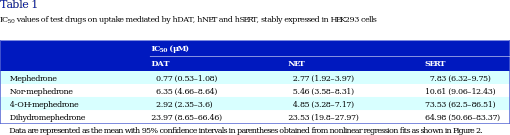

<?xml version="1.0" encoding="UTF-8"?>
<table title="table1" id="table1" class="tabcontent" xmlns="http://www.w3.org/1999/xhtml">
 <tr>
  <td>
   
   <p>corpus-oa-validation/10.1111_bph.13547/tables/table1/table.svg.png</p>
  </td>
  <td>
   <table class="table">
    <caption/>
    <tr>
     <th class="cell">Mephedrone Nor-mephedrone 4-OH-mephedrone Dihydromephedrone </th>
     <th class="cell">0.77 (0.53–1.08) 6.35 (4.66–8.64) 2.92 (2.35–3.6) 23.97 (8.65–66.46) </th>
     <th class="cell">2.77 (1.92–3.97) 5.46 (3.58–8.31) 4.85 (3.28–7.17) 23.53 (19.8–27.97) </th>
     <th class="cell">7.83 (6.32–9.75) 10.61 (9.06–12.43) 73.53 (62.5–86.51) 64.98 (50.66–83.37) </th>
    </tr>
    <tr>
     <td class="cell">Data are represented as the mean with 95% confdence intervals in parentheses obtained from nonlinear regression fts as shown in Figure 2.</td>
    </tr>
   </table>
   <p>corpus-oa-validation/10.1111_bph.13547/tables/table1/table.svg.html</p>
  </td>
 </tr>
</table>
